Aventuras matemáticas y en español
Guías de refuerzo escolarSchool support guides
Ilustración de dos guías de refuerzo escolar en matemáticas y español para estudiantes del norte del Cauca. Dos docentes acompañan al lector en un recorrido por diferentes ejercicios lúdicos y didácticos.
Illustration of two school support guides in math and Spanish for students in northern Cauca. Two teachers guide the reader through a range of playful learning exercises.
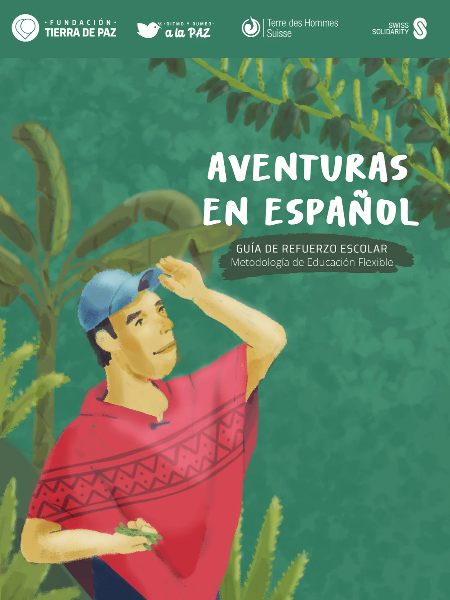
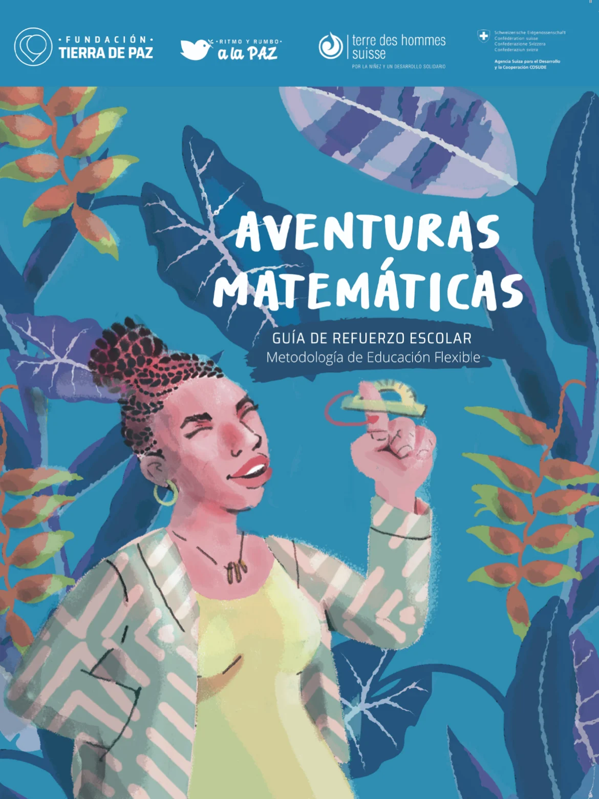
Portadas.Covers.
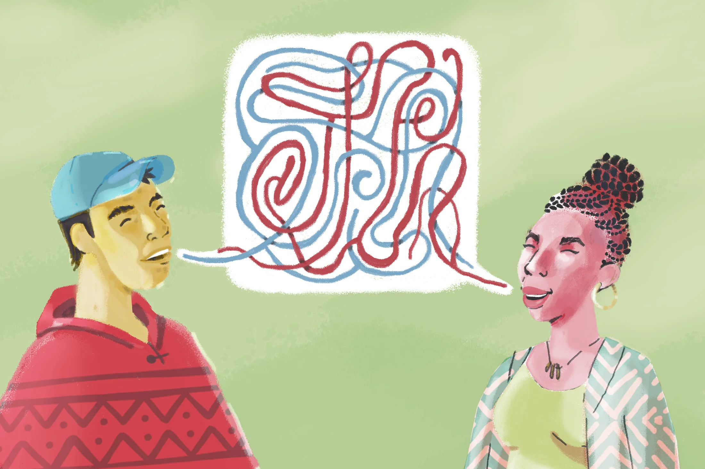
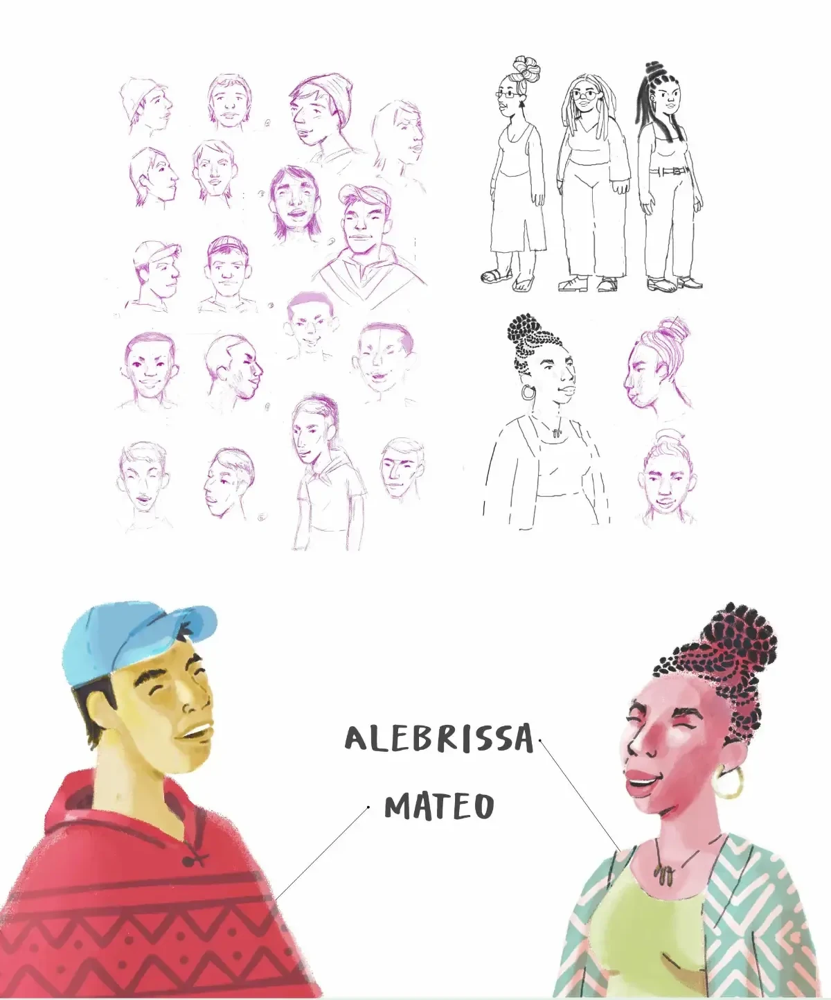
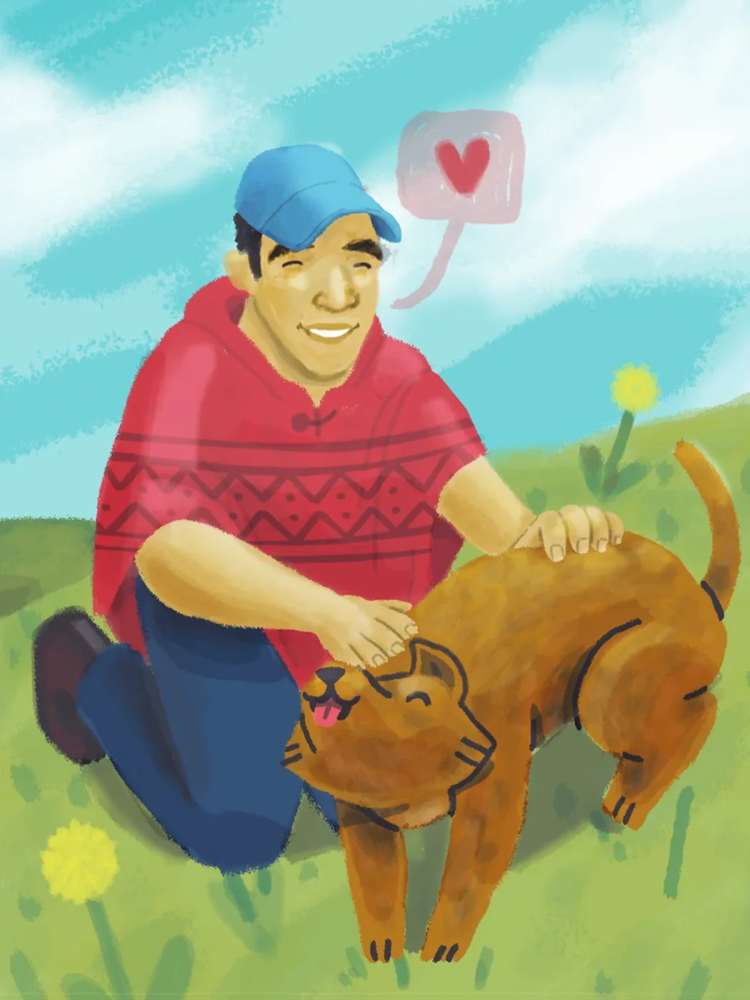
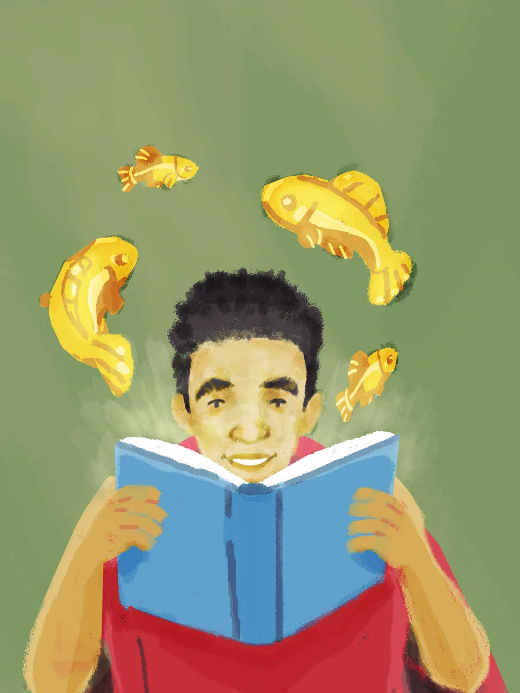
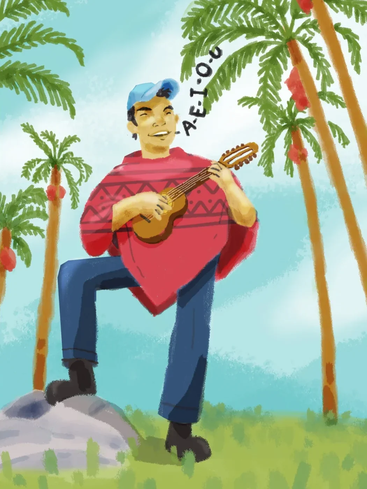
Ilustraciones de Aventuras en español.Illustrations from Aventuras en español.
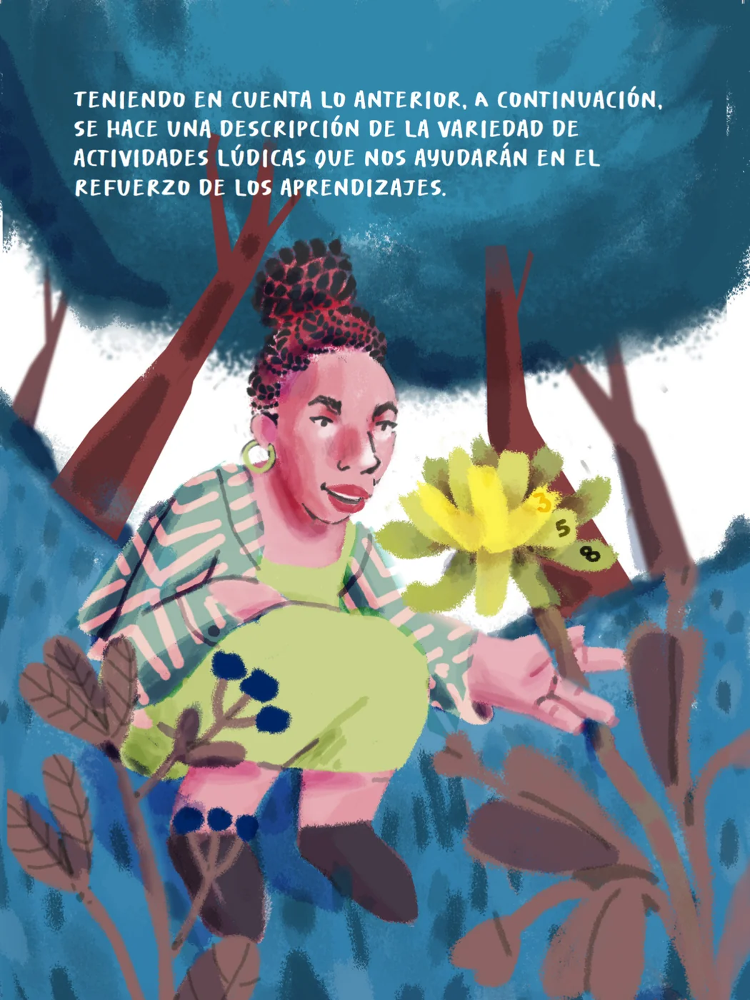
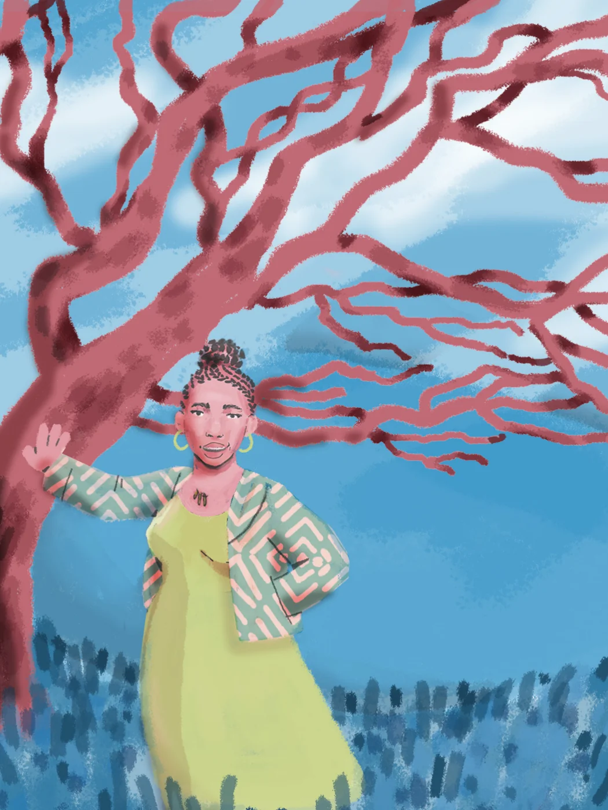
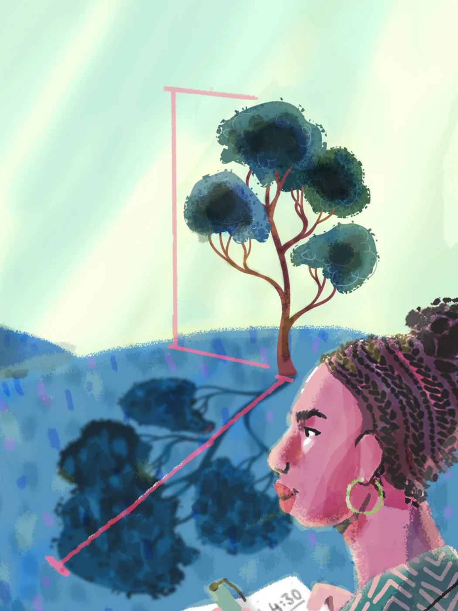
Ilustraciones de Aventuras matemáticas.Illustrations from Aventuras matemáticas.

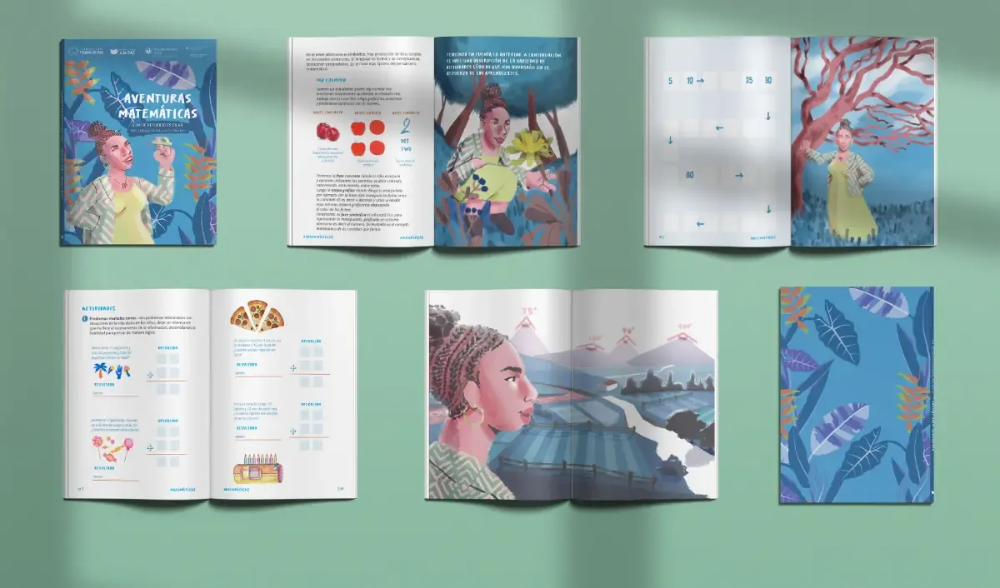
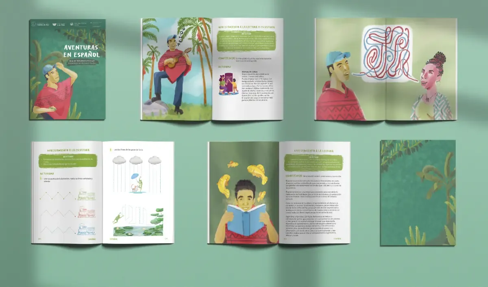
Las dos guías impresas y sus páginas interiores.The two printed guides and their inside pages.